Virtua Fighter 5 FS コスプレ：その他 編
懐かしの『Virtua Fighter 2』が Xbox 360 で配信されたのを良い機会として、 VF5FS の追加衣装を全部購入した。今、私はキャラに「コスプレ」をさせて楽しんでいる。他のゲーム(後述)の「キャラクリ」と違い、自由度が少ないが、限られたコスチュームで自分が気に入るコーディネイトをした結果、何かのテーマやキャラが見えてくるのが楽しい。 今回は、そうやって「コスプレ」させたのをテーマごとに《リリアン女学園 編》《七曜 編》《その他 編》としてまとめ、紹介する。この記事は、試しに作ってみたキャラのうち残したいと思ったものを集めた《その他 編》である。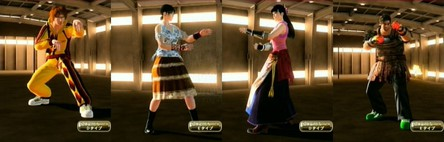
なお、この記事のリード部分は各編でも同じなので、すでに読んだ方は次の節まで読み飛ばしてくださればよい。 『Virtua Fighter 5 Final Showdown』(バーチャファイター５ファイナルショーダウン、略して VF5FS) は、元はアーケードゲームだったのが、Xbox 360 または PlayStation 3 に移植されたもので、ダウンロードで購入できる。 さらに追加コスチュームを買うことでキャラの衣装を変えられるようになる。各キャラごとにコスチュームが売っているが、複数のキャラがセットになったものが２セットあり、その２セットを変えばすべのキャラの衣装が揃う。 私は前作の『Virtua Fighter 5 Live Arena』(以下 VF5LA と略す)もダウンロード購入していたが、そちらは衣装は各キャラで攻略をしてはじめて手に入るものだった。ところが、今作 VF5FS のダウンロード版では、キャラのコスチュームセットを買えば、いきなりすべての衣装が使える。 だから、「コスプレ」目的ならば、ダウンロード購入時に一気に複数キャラのアイテムセットのその１とその２を揃えてしまえば、幸か不幸か最初に出たアイテムセット以来、新しいコスチュームの追加はないので、すべての衣装を制限なく使えることになる。(CG の動きのはげしさを避けるためらしい制限はある。)今なら全部で 3600 MSP (PS3 だと4500円)。オススメ。 (「コスプレ」のこのゲーム内での正しい呼称は「アイテムカスタマイズ」らしい。Terminal メニューから入る。) なお、『Virtua Fighter 2』が好きだったオールドファンの中には「バーチャ」が、3や 4 になってどんどん操作や概念が難しくなることに付いていけなくなった方もいるかもしれない。(私もそうだった。)でも、この 5 のシステムは、あえて操作を単純化する方向が出されているようで、ファンの多かった VF2 のグラフィックを極限まで美化した「だけ」に留めたといった感がある。ロートル格闘ゲーマーにもオススメである。 この先、コスプレデータの「レシピ」すなわち使った衣装名等も公開するが、言及のない身体部位はアイテムを使っておらず、省略した。 ■ハリーまたはショーン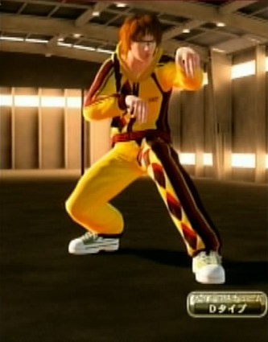
私は『バーチャファイター』初代での持ちキャラは、アキラとカゲ、『バーチャファイター２』ではリオンを使っていた。VF5FS の前作 VF5LA ではリオンの操作が VF2 のものとはかなり違う感じだったので、使うことはなかったが、 Xbox で VF2 が発売したのを機に VF5FS を買ったので、リオンも使うかもしれないと思った。…だったらどういう衣装にしよう…と VF5LA の攻略本を見て、ピンときたのが、この黄色いジャージ姿になる。 金髪なまじめくん…メガネを掛けさせて学生風のカバンでも持たせればいいかと考えていた。でも、VF5LA の攻略本では肩かけカバンに見えたものが、実際には、腰にちょっと添えるだけのアクセサリ的なものと知って、計画がはずれた。 代わりに持たせたのが「教科書」。肩から釣り下げている。金髪頭もどうもリオンの個性が勝ち過ぎる…というので、いろいろ試したところ、「ブラウンウェイビーナチュラルヘア」がなんとも、コスプレ的で、『ハリー・ポッター』の成長した姿や、ジョン・レノンの息子ショーンを思わせる感じで、良かった。名前は、ハリー・ポッターから取って、Harry にした。 名前: Harry 素体: リオン Dタイプ 髪、帽子: ブラウンウェイビーナチュラルヘア メガネ: レモンイエロースポーツサングラス アウター: イエロートレーニングウェア 上半身(後): 教科書 パンツ: イエロートレーニングパンツ 足: ライトグリーンローテクスニーカー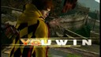
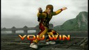
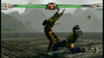
■ハイカラさん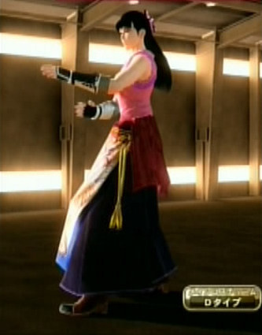
一時期、はやったが、今でも女子大生の卒業式で大正女学生風スタイルをその晴れ着のように着る人はいるんだろうか。 アニメやドラマにもなった『はいからさんが通る』。私は姉妹のいない男で、気にはなっていても少女マンガ系を読むのは恥ずかしかったが、あの大正女学生風スタイルはかわいいなぁ…と遠くで見てた。 アオイの Dタイプ は私が「はいからさん」に持ってるイメージにピッタリで、運動のために「たすきがけ」をしている感じ。ちょっと安直かと思うくらいスンナリ、イメージが固まった。帯に短しタスキに長しどころか、振る袖もなくして靴で蹴るのが、なんとも現代的な愛らしさがある。 名前: Haikara-san 素体: アオイ Dタイプ 髪、帽子: ハイカラヘアー 手: 紺紐灰色合気グローブ アウター: 紋付き桃色たすきがけ胴着 パンツ: 紫飾り袴 足: ハイカラブーツ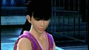
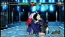
■大きくなったしずかちゃん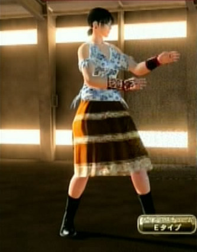
前作 VF5LA のころ、アオイでいろいろな髪型を試していて、案外この子は<ruby><rb>芋</rb><rt>いも</rt></ruby>いなと思うことがあった。そのイモいところに良さがあるなと思った。その良さをいかすためのダサい衣装を着せようとしたのだが、そのころはどうも勇ましさが立ってうまくいかなかった。 VF5FS を買って、E タイプの衣装を見て「これだ」と思った。E タイプの衣装はむしろメイド風にすることが想定されていたのかもしれないが、少し東南アジア風のくだけた感じが良さそうだった。スカートを一番地味な感じにして、少し勘違いフェアトレード風のアジアンな白いシャツを着せる。ほくろを付けメガネをかけ、ショートカットか、おさげにすれば完璧…。 すると、何とも和風な肉感性みたいなのが出てきた。マザコンとは少し違う。処女的清楚さがありながら、男を物として見ないよう、話やすさや安心感をわざと残してくれている、そんなある種の理想を見る気がした。 これは…しずかちゃんだな、と思った。『ドラえもん』の作者は、しずかが大人になった姿をこう描かないだろうことはわかる。男は身勝手だから、そんなことを女性に望んではいけない。でも、のび太たる我々が幼なじみのしずかに望んだ姿というのは、こういう成長の在り方だったんじゃないかと思う。 名前: Shizuka 素体: アオイ Eタイプ 髪、帽子: 二つ結びおさげ メガネ: 黒縁まじめメガネ 耳: 赤いコスモスの耳飾り 鼻、口: ほくろ 手: 合気篭手 アウター: ブルーフローラルシャツ パンツ: トパーズスリットスカート 足: ブラックハイカラブーツ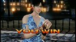
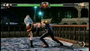
■リアルっぽいオレ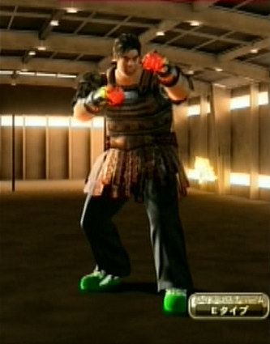
昔はダイエット食品とか運動器具の広告で「使用前」「使用後」の写真を並ているものがあり、それをパクってネタとするマンガとかがあった。最近でのそれは、2ch とかで、二つの写真を並べて「ネット上のお前ら」「現実世界のお前ら」と対比するネタに発展しているのだと思う。 ここまでコスプレは、要するに「ネット上のオレ」で、対戦格闘が私というもの(その一部)の表現だとしても、かなり美化されたものになる。それに対する「現実世界のオレ」みたいなものを呈示して、このコスプレシリーズをしめるのもおもしろいか、と思い、作ったのがこのコスプレになる。 私はデブだけど、鷹嵐よりはジェフリーに近いガッシリ系のデブだという自己認識がある。ジェフリーのように筋肉はないにしろ、ジェフリーが立ったときの肩がガッシリしてるのに背が丸い感じは、ときどき街でショーウィンドーなどに映る私の姿そのもの。 私は短いこと長いことはあってもこんな作為のない髪型をしていて、黒髪だけれど、あえて不潔感(!)を出すためにブラウンにした。ヒゲはたくわえてない。顔は口はこんなに大きくないが、まったく似てないとは言えない。 上着は、私はワイシャツをボタンをとめずに着ることがなく、タンクトップどころか T シャツで歩き回ることもないので、適当なものがない。しかたなく、ネットに対して FullArmored なオレというのを表現できるかと思い Eタイプにして「ブラウンオリエンタルアーマー」を選んだ。それにつれて、グローブやトラ助人形も、JRF としてのネット上の象徴に近いものを選んだ。一方、パンツや靴はわりと私が着ているものに近い。 名前は、本当は FullArmoredMe の "Me" のところに Xbox 360 の私のゲーマータグ(今はヒミツ)を入れている。 名前: FullArmoredMe 素体: ジェフリー Eタイプ 髪、帽子: ブラウンスタイリッシュヘアー 鼻、口: ヒゲなしフェイス 上腕: ブラックローマンショルダーパッド 手: ブラックファイヤーグローブ アウター: ブラウンオリエンタルアーマー 肌: 色白 腰: おしゃべりトラ助人形 パンツ: ブラックストライプスラックス 足: 緑色スターダストスニーカー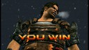
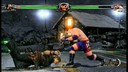
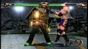
■最後に VF5FS を買って、アオイのすべての衣装が使えるようになったとき、まず「アオイ」つながりで『ウイングマン』のアオイさんを作ろうとしたがうまくいかなかった。その探究の結果がやがて、瞳子や乃梨子やハイカラさんとなった。その後も同じような感じで、どうも VF5FS のコスプレは特定のキャラクターを作ろうとすると失敗するものらしい。それは、自由度が少ないということでもあるし、VF5 のキャラの素体の個性の強さがあるからなのだろう。 コスチュームタイプという型に、テーマ性を心に秘め、デフォルト衣装に反発しながら、自分の美意識をあてはめていくと、そこに自分の美意識の源流となったキャラクター、または、そういったキャラクターの性格というものが見えてくる。大袈裟な言い方になるが、それが、VF5FS のコスプレの真髄のようなものだと私は思う。 ■配布物 なお、これらの「コスプレ レシピ」と画面写真をまとめたものを zip化して同人的公開物として SugarSync に置いてあります。 JRF_VF5FS_Cosplay.zip。 VF5FS は、SEGA の 2012年発売の著作物です。私自身は「レシピ」を同人で売れたりしたらいいのになぁ…即売会とかのお祭りにゲーム機とディスプレイを持ちこんで遊べないかなぁ…とか夢想しています。ただ、需要もそれほどないでしょうし、とりあえず公開したほうが愛着を持ってもらえるかと考え、無料で公開しています。ネットで公開した以上、SEGA がどういうかはわかりませんが、基本的に私としては自由に使っていただいてかまいません。 とはいえ、同人活動への色気は残しておきたいので、ダウンロード数がカウントできる SugarSync に置いています。そこに別サイトからリンクするのはいつでもこちらがリンクを切れるのでいいのですが、別サイトにアーカイブを置いての配布は、私か SEGA がいいと言わない限りやめていただくようお願いします。(私の公開自体が同人誌な勝手な公開ですので、SEGA の明示の許諾さえあれば、私は文句をいいません。) ■関連 ●VF5FS コスプレシリーズ(《リリアン女学園 編》、《七曜 編》、《その他 編》、《リリアン女学園 編２》、《イロモノ 編》、《懐かしのスター 編》)。《懐かしのスター 編》がこの記事の続きみたいなものになっている。 ●『ソウルキャリバー４』。最初で「他のゲームのキャラクリ」というのはこのゲームのキャラクタークリエイションのこと。このブログで以前、作ったキャラを紹介している。(《バビル二世編》、《懐かしキャラ編１》、《懐かしキャラ編２》) 更新：2012-12-09,2012-12-21 初公開：2012年12月09日 19:32:30 最新版：2012年12月21日 21:32:49
Trackbacks: 《Virtua Fighter 5 FS コスプレ：懐かしのスター 編》 from JRF の私見：雑記 先日の VF5FS コスプレの三つの記事のあと、全キャラの衣装を調べるべく、とにかく全キャラに一つずつ「コスプレ」を作ってみることにした。VF5FS の「コスプレ」は、他のゲーム(後述)の「キャラクリ」と違い、自由度が少ないが、限られたコスチュームで自分が気に入るコーディネイトをした結果、何かのテーマやキャラが見えてくるのが楽しい。 今回は、そうやって「コスプレ」させたのをテーマごとに《リリアン女... 受信： 2012-12-21 21:18:29 (JST)
Links: Virtua Fighter 2: http://amcvt.sega.jp/model2/vf2.html (hbm) リリアン女学園 編: http://jrf.cocolog-nifty.com/column/2012/12/post.html 七曜 編: http://jrf.cocolog-nifty.com/column/2012/12/post-1.html その他 編: http://jrf.cocolog-nifty.com/column/2012/12/post-2.html Virtua Fighter 5 Final Showdown: http://amcvt.sega.jp/vf5fs/ (hbm) Virtua Fighter 5 Live Arena: http://virtuafighter5.jp/xbox360/ (hbm) ハリー・ポッター: http://ja.wikipedia.org/wiki/%E3%83%8F%E3%83%AA%E3%83%BC%E3%83%BB%E3%83%9D%E3%83%83%E3%82%BF%E3%83%BC%E3%82%B7%E3%83%AA%E3%83%BC%E3%82%BA (hbm) はいからさんが通る: http://ja.wikipedia.org/wiki/%E3%81%AF%E3%81%84%E3%81%8B%E3%82%89%E3%81%95%E3%82%93%E3%81%8C%E9%80%9A%E3%82%8B (hbm) ドラえもん: http://dora-world.com/top.html (hbm) ウイングマン: http://ja.wikipedia.org/wiki/%E3%82%A6%E3%82%A4%E3%83%B3%E3%82%B0%E3%83%9E%E3%83%B3 (hbm) JRF_VF5FS_Cosplay.zip: https://www.sugarsync.com/pf/D252372_79_8912523711 リリアン女学園 編２: http://jrf.cocolog-nifty.com/column/2012/12/post-3.html イロモノ 編: http://jrf.cocolog-nifty.com/column/2012/12/post-4.html 懐かしのスター 編: http://jrf.cocolog-nifty.com/column/2012/12/post-5.html ソウルキャリバー４: http://www.soularchive.jp/SC4/ (hbm) バビル二世編: http://jrf.cocolog-nifty.com/column/2010/10/post-1.html 懐かしキャラ編１: http://jrf.cocolog-nifty.com/column/2010/11/post-1.html 懐かしキャラ編２: http://jrf.cocolog-nifty.com/column/2010/11/post.html
後方参照 (1 件)
- URL参照 広告をクリックした先のとある募金サイトが、オーバーレイポップアップを出して来たの… 2013年06月04日